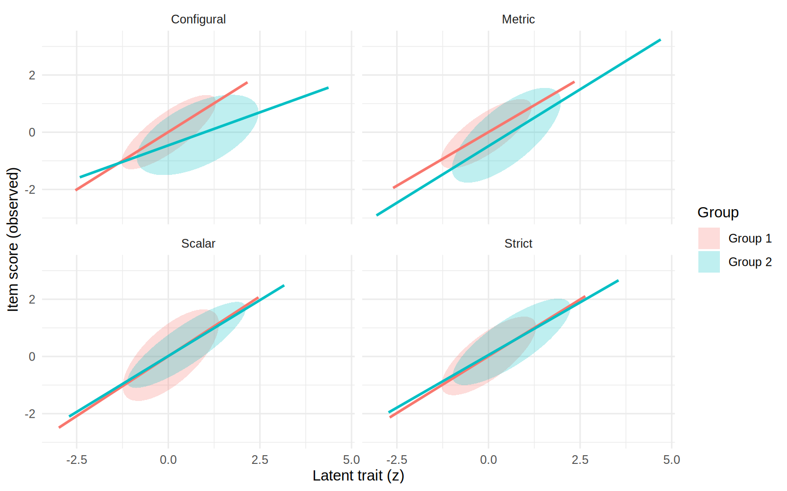

Basics of Measurement Invariance
Overview
This note demonstrates measurement invariance testing of the Self-Oriented Perfectionism (SOP) scale across gender using multiple-group CFA. We follow the standard sequence of nested models: configural (same pattern of fixed/free loadings), metric (equal loadings), scalar (equal loadings + intercepts), and strict (add equal residual variances/residual covariances). Data and exclusion criteria follow Williams & Edwards (2021; OSF: https://osf.io/m5dy6/).
Statistical and Causal Perspectives
To put it simply, measurement invariance is the idea that some attributes are measured in the same way across different groups, times, or contexts. This is a fundamental assumption in quantitative science. One would not be able to say A is taller than B if the ruler used to measure A is different from the one used to measure B. Similarly, in psychological measurement, we would not be able to say that A has better well-being than B, if the mental “ruler” is different for A and B. Measurement invariance testing is a way to check whether the “ruler” is the same across groups.
The complication in psychology is that we are measuring abstract constructs, and our instruments (e.g., questionnaires) are imperfect indicators of those constructs. Imperfect measurement means that there are measurement errors. So instead of asking whether the “ruler” is the same across groups, we ask whether the “ruler” gives equivalent distributions of scores across groups. So, from a statistical perspective, for a grouping variable \(G\) and an observed score \(Y\), measurement invariance means
\[ P(Y | G = A) = P(Y | G = B) = \ldots \] for all groups.
Data and preprocessing
we_path <- here::here("data", "we_data.csv")
if (!file.exists(we_path)) {
download.file("https://osf.io/download/6mdb4/", we_path)
}
we_raw <- read.csv(we_path)
we_raw <- dplyr::rename(we_raw, Att_check = SOP_6)
# Exclude: under-18, non-students, >6 missing study items, failed attention check, duplicates
we_vars <- c(
paste0("PASS_", c(1:9, 16:18)),
paste0("NGSE_", 1:8),
paste0("SOP_", 1:5)
)
we_raw <- we_raw[is.na(we_raw$Age) | we_raw$Age != 1, ]
we_raw <- we_raw[is.na(we_raw$Student) | we_raw$Student == 1, ]
we_raw$nmiss <- rowSums(is.na(we_raw[, we_vars]))
we_raw <- we_raw[we_raw$nmiss <= 6, ]
we_raw <- we_raw[!is.na(we_raw$Att_check) & we_raw$Att_check == 5, ]
we_raw <- we_raw[!duplicated(we_raw$PID_deID), ]The analysis uses the SOP items and a derived gender grouping variable (male, female). The R script notes/R/invariance.R performs data preparation and applies the preregistered exclusions; we reuse those objects here.
Model specification
The model and estimation code are sourced from notes/R/invariance.R via chunk labels; see the configural chunk for the model definition.
model_1f <- "
SOP =~ SOP_1 + SOP_2 + SOP_3 + SOP_4 + SOP_5
SOP_1 ~~ SOP_2
"
fit_config <- cfa(
model_1f,
data = sop_data_mg,
std.lv = TRUE,
estimator = "MLR",
missing = "FIML",
group = "gender"
)Multiple-group CFA
We estimate the nested models (configural → metric → scalar → strict) using robust maximum likelihood (MLR) and FIML for missing data. The code chunks below are populated from notes/R/invariance.R.
fit_metric <- cfa(
model_1f,
data = sop_data_mg,
std.lv = TRUE,
estimator = "MLR",
missing = "FIML",
group = "gender",
group.equal = "loadings"
)Illustration of invariance assumptions
library(ggplot2)
set.seed(2026)
n <- 200
types <- c("Configural", "Metric", "Scalar", "Strict")
err <- rnorm(n, mean = 0, sd = 1)
params <- list(
# non-strict models: groups have different residual SDs and different intercepts (means)
Configural = list(
A = list(int = 0, xmean = 0, xsd = 1, slope = 0.8, sd = 0.6),
B = list(int = -0.5, xmean = 0.6, xsd = 1.2, slope = 0.5, sd = 0.9)
),
Metric = list(
A = list(int = 0, xmean = 0, xsd = 1, slope = 0.8, sd = 0.6),
B = list(int = -0.5, xmean = 0.6, xsd = 1.2, slope = 0.8, sd = 0.9)
),
# show scalar with equal slopes but different latent means to illustrate mean differences
Scalar = list(
A = list(int = 0, xmean = 0, xsd = 1, slope = 0.8, sd = 0.9),
B = list(int = 0, xmean = 0.6, xsd = 1.2, slope = 0.8, sd = 0.6)
),
# strict invariance: residual SDs and latent means are equal across groups
Strict = list(
A = list(int = 0, xmean = 0, xsd = 1, slope = 0.8, sd = 0.7),
B = list(int = 0, xmean = 0.6, xsd = 1.2, slope = 0.8, sd = 0.7)
)
)
df <- do.call(
rbind,
lapply(types, function(t) {
p <- params[[t]]
do.call(
rbind,
lapply(c("A", "B"), function(g) {
par <- p[[g]]
x <- rnorm(n, mean = par$xmean, sd = par$xsd)
y <- par$int + par$slope * x + err * par$sd
data.frame(type = t, group = g, x = x, y = y)
})
)
})
)
df$group <- factor(df$group, labels = c("Group 1", "Group 2"))
p <- ggplot(df, aes(x = x, y = y, color = group, fill = group)) +
stat_ellipse(geom = "polygon", level = 0.68, alpha = 0.25, color = NA) +
geom_smooth(
method = "lm",
se = FALSE,
linewidth = 0.9,
show.legend = FALSE
) +
facet_wrap(~type, nrow = 2) +
labs(
x = "Latent trait (z)",
y = "Item score (observed)",
color = "Group",
fill = "Group"
) +
theme_minimal()
p
Model comparison
We compare nested models using a robust likelihood ratio test.
lavTestLRT(fit_config, fit_metric, fit_scalar, fit_strict)Interpretation
- Configural invariance indicates the same factor structure holds across groups (pattern of fixed/free loadings).
- Metric invariance (equal loadings) supports comparing covariances and regression coefficients across groups.
- Scalar invariance (equal intercepts) is required to compare latent means across groups.
- Strict invariance additionally constrains residual variances and residual covariances.
If the nested test indicates misfit when imposing equality constraints, evaluate practical fit changes (CFI, RMSEA) and inspect modification indices to identify noninvariant parameters. Partial invariance (freeing a small set of parameters) is commonly investigated when full invariance is untenable.
References
Williams, M. N., & Edwards, S. R. (2021). Conceptual replication of Seo (2008). OSF: https://osf.io/m5dy6/